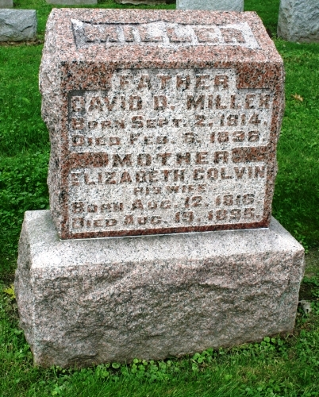

| 
Elizabeth COLVIN (1816-1895) |
Elizabeth COLVIN
BIRTH PLACE: Zanesville, Ohio (as per daughter Virginia's "Illinois, Deaths and Stillbirths Index, 1916-1947")
-- Cook County, Illinois, Deaths Index, 1878-1922 Elizabeth married Rev. David Devore MILLER, son of Rev. Adam MILLER and Sarah PRIOR, in 1838. (Rev. David Devore MILLER was born on 2 Sep 1814 in Zanesville, Muskingum County, Ohio, died on 6 Feb 1896 in Chicago, Cook County, Illinois and was buried in Evergreen Memorial Cemetery, Bloomington, McLean County, Illinois.) |
 General Notes:
General Notes: